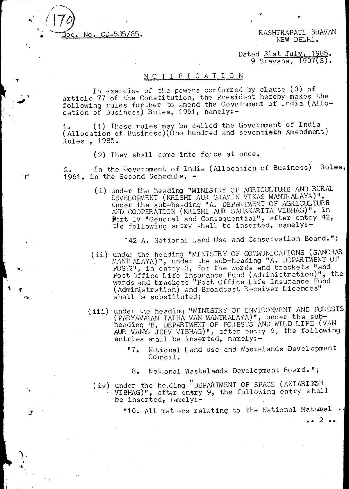
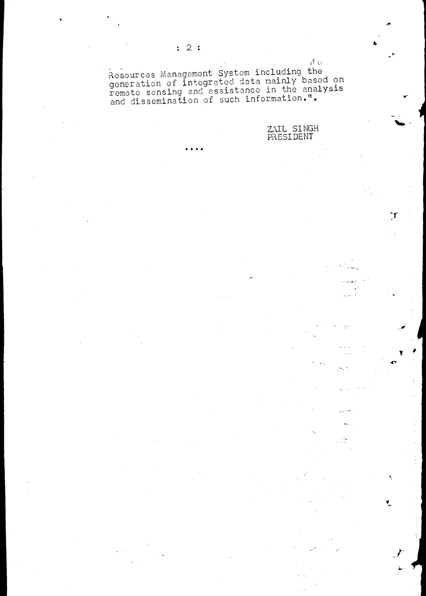
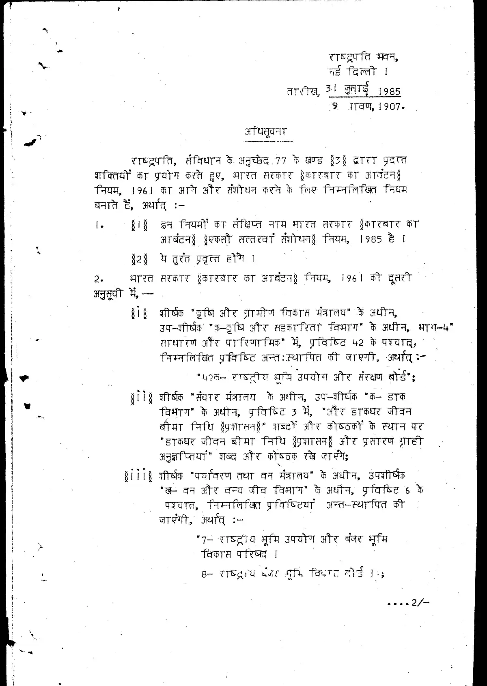
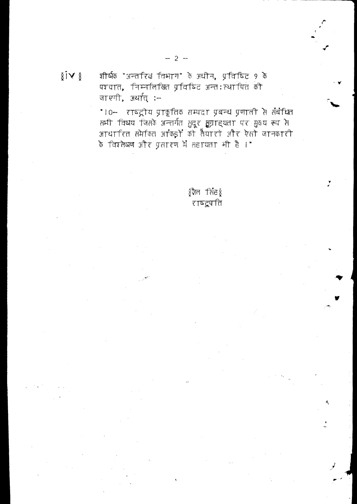

Amendment #170 (S.O. 569(E), 1985)
4 changes: 0 to the First Schedule, 4 to the Second Schedule. 3 applied1 not applied
The order, page by page
Page 1 of 4

1234after Schedule 2 › MINISTRY OF AGRICULTURE AND RURAL DEVELOPMENT › DEPARTMENT OF AGRICULTURE AND COOPERATION › IV General and Consequential › entry 42
- 42A. National Land Use and Conservation Board.
applied at schedule 2 › ministry Ministry of Agriculture and Rural Development (Krishi aur Gramin Vikas Mantralaya) › department… in the Rules after #170
Schedule 2 › MINISTRY OF COMMUNICATIONS › DEPARTMENT OF POSTS › entry 3
for “and Post Office Life Insurance Fund (Administration)” read “Post Office Life Insurance Fund (Administration) and Broadcast Receiver Licences”
not applied (the change could not be placed in the Rules as read; see How this document was read)
after Schedule 2 › MINISTRY OF ENVIRONMENT AND FORESTS › DEPARTMENT OF FORESTS AND WILD LIFE › entry 6
- 7. National Land use and Wastelands Development Concil.
- 8. National Wastelands Development Board.
applied at schedule 2 › ministry MINISTRY OF ENVIRONMENT. AND FOREST › department DEPARTMENT OF FORESTS AND WILD LIFE › entry 7 in the Rules after #170
states inferred loose
after Schedule 2 › DEPARTMENT OF SPACE › entry 9
- 10. All maters relating to the National Natural .. 2 : 2: it a Resources Management System including the generation of integrated data mainly based on remote sensing and assistance in the analysis and dissemination of such information.
applied at schedule 2 › department DEPARTMENT OF SPACE › entry 10 in the Rules after #170
read page break
Page 2 of 4

Page 3 of 4

Page 4 of 4

How this document was read
Changes placed by an inference rule
| Change | Rule | Status | What |
|---|---|---|---|
| 3 | loose | accepted | change 3: ministry MINISTRY OF ENVIRONMENT AND FORESTS taken for ministry MINISTRY OF ENVIRONMENT. AND FOREST, named loosely |
Known issues
| Change | Issue | Known as |
|---|---|---|
| 2 | change 2: the words to substitute are not in schedule 2 › department MINISTRY OF COMMUNICATIONS › department A › entry 3 | Words that differ |
From the Government of India (Allocation of Business) Rules, 1961 and their amendments, as published by the Cabinet Secretariat (cabsec.gov.in), read by orgpedia. The readings of the older scanned gazettes have known gaps.